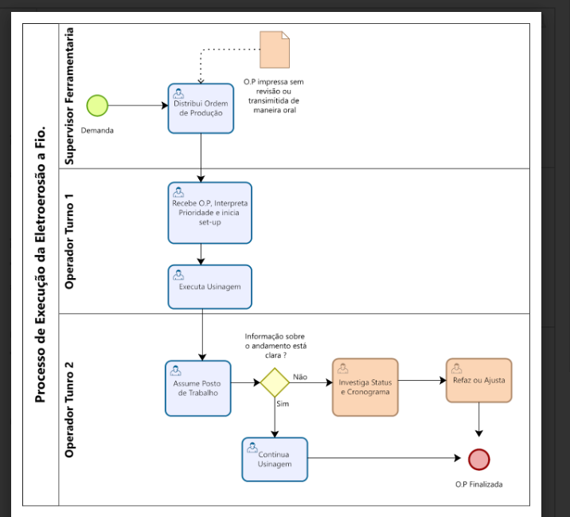
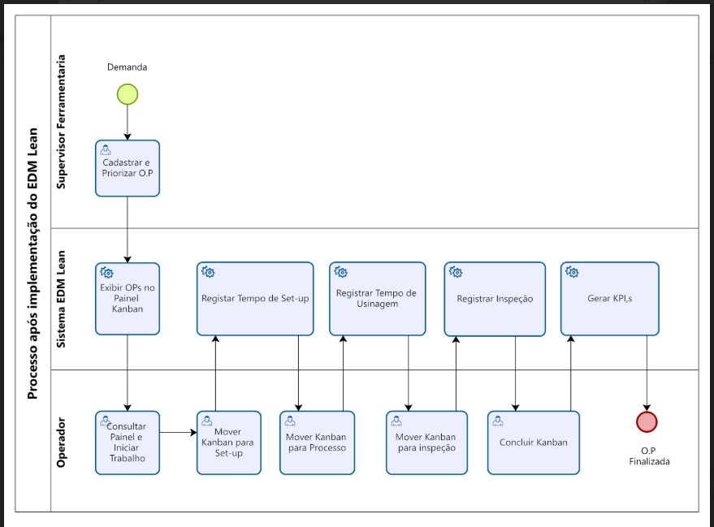
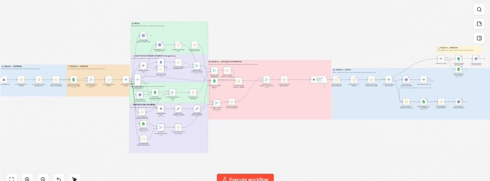
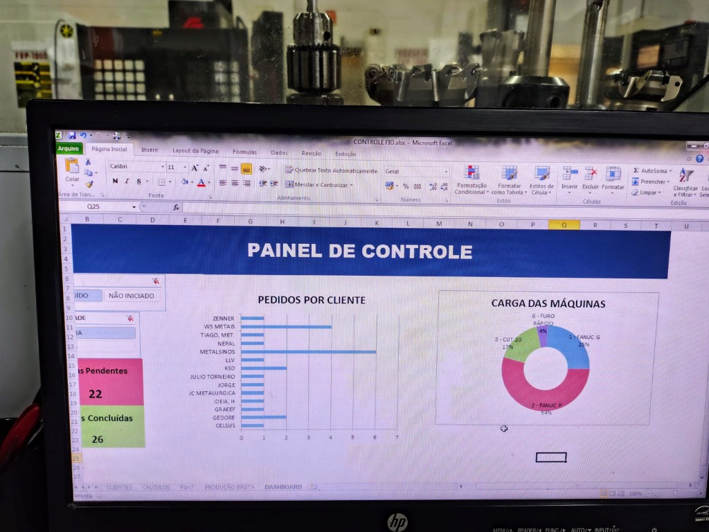
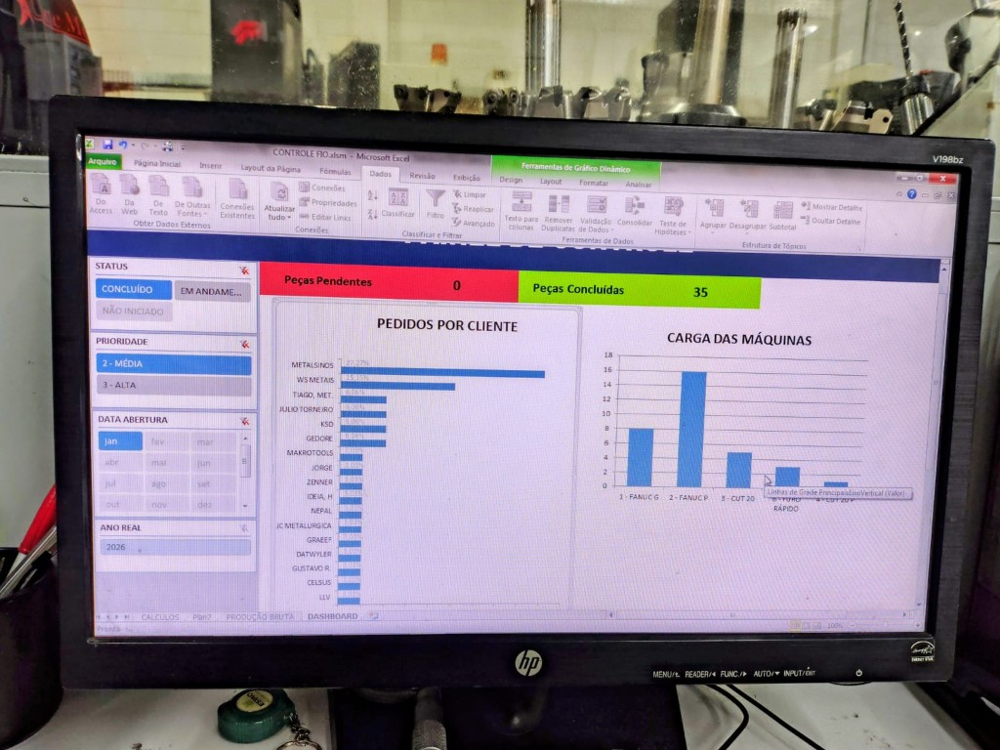

Portfolio
Processos · Automação · Aplicação de IA
Michel Fioravante
Gestão Industrial · Pós em Engenharia de Processos · Projetos em produção
Sobre
Formado em Gestão Industrial pela Ulbra, pós-graduado em Engenharia de Processos pela PUC-RS. Experiência em ferramentarias e usinagem — projetos acadêmicos (PUC-RS) e implementações reais em operação. Entendo o problema de negócio antes de propor qualquer solução — e uso IA como ferramenta para resolver, não como fim em si mesma.
Construo agentes e fluxos de automação com n8n que consomem APIs de IA generativa, orquestram tarefas e integram sistemas. Não treino modelos — aplico o que já existe de forma útil e consistente dentro de processos reais.
Skills
Projetos
O processo de produção da oficina foi mapeado em Bizagi antes de qualquer linha de código. O AS-IS expôs os gargalos reais — ordens impressas sem revisão, comunicação oral entre turnos, sem rastreabilidade. O TO-BE redesenhou o fluxo e orientou a arquitetura do sistema. O resultado: uma plataforma SaaS com Kanban em 5 etapas, monitoramento de insumos em tempo real e dashboards com KPIs industriais. Nasceu como protótipo acadêmico na PUC-RS e hoje tem usuários reais no setor de usinagem.


Atendente virtual humanizada desenvolvida para uma cafeteria-livraria no RS. Responde pelo WhatsApp 24h com linguagem natural e personalidade da marca — suporte a texto, áudio e imagens. Cardápio e promoções gerenciados pelo proprietário via Google Sheets, sem código. Sistema de pedidos com extração automática de itens, cálculo de total e notificação por WhatsApp. Arquitetura com n8n orquestrando Evolution API e Gemini 2.5 Flash, rodando em Docker com custo de infraestrutura mínimo.

Dashboard de gestão visual desenvolvido para uma ferramentaria de usinagem com as ferramentas disponíveis na operação — sem budget, sem sistema novo. A base de dados era Access 2007, o padrão da empresa na época. Conectado a ela, o painel consolida pedidos por cliente, carga por máquina e status de produção com filtros dinâmicos por prioridade e período. Substituiu o controle em papel e entregou ao supervisor visibilidade imediata do chão de fábrica. Resultado prático com o que já existia.


Contato
Perfil analítico com base industrial para identificar onde a IA agrega valor real — e experiência prática para implementar automações que funcionam no dia a dia da operação.
Disponível para novas oportunidades.